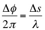
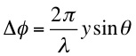
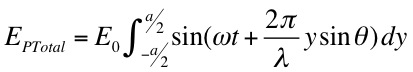
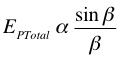
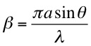

where ω is the angular frequency of the wave and Δφ is the phase angle. The relationship between phase angle and path difference Δs is given by

From the diagram at right the path difference Δs, relative to the center, is given by ysinθ. In this case

so that the total electric field at a point on the screen is obtained by integration over the slit

Performing this integration we obtain

where 
as expected.
The exact position of these maxima is shifted slightly towards smaller θ.
Dr. C. L. Davis
Physics Department
University of Louisville
email: c.l.davis@louisville.edu